第一幕
探索者｜多场域出发
先找规则，再谈喜欢
从重庆到俄罗斯，俄语、电子工程、竖屏导图与内容创作同时推进。不急着选定主方向，先在每个场域留下可继承的东西：每进入一个新场域，先找它的规则、证据和交付形式。
- 2022.09开始本科｜电子信息科学与技术，能力的原点场域
- 2024.01俄语 B1｜第二语言中的证据起点（TPU 证书）
- 2024.08.11赴俄罗斯继续学习｜语言、专业、生活同步重建
- 2025—2026KuzSTU 两段实验室实践｜在真实工程环境中校准专业
Four Acts
一条有版本号的成长线：每一幕都留下可继承的东西——规则、证据与交付形式。
第一幕
先找规则，再谈喜欢
从重庆到俄罗斯，俄语、电子工程、竖屏导图与内容创作同时推进。不急着选定主方向，先在每个场域留下可继承的东西：每进入一个新场域，先找它的规则、证据和交付形式。
第二幕
工程是最硬的能力证词
答辩前两周，23 张图表与 99 条术语待统一。划定边界：AI 负责生成与对照，我负责确认与背书；写下四条红线，10 天 9 个版本。同一时期，给七个 AI 协作角色立下角色卡与回交阈值。
23 张图表｜99 条术语｜10 天 9 版
无实物实测——边界写清楚，证据才可信
第三幕
经验只有封装后才可复用
零散保存的规则会在下一次忙碌中丢失。我把方法论沉淀为 102 行六层个人操作系统；游鸿世界的视觉早于文档四个月——系统不是一次写完的，是被活出来的。简历也建立了唯一事实母版。
第四幕
让积累成为可访问接口
系统只对自己有用还不够。一份事实母版，裁剪出多份简历接口；双轨网页同日上线，哈希三方一致；发布本身归档为可回滚、可复核的版本。连接的前提，是别人也能读懂。
事实母版 → 简历接口 → 双轨网页 → 哈希复检 → release 归档
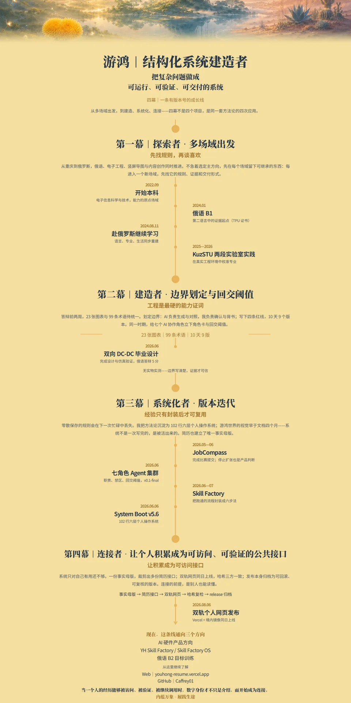
长卷为同一套四幕文案的视觉成图版（4C.2 冻结版），内容与上方时间线一致。
Evidence Cards
每张卡只写能被证据支撑的内容：问题、关键动作、关键数字、结果，以及公开边界。
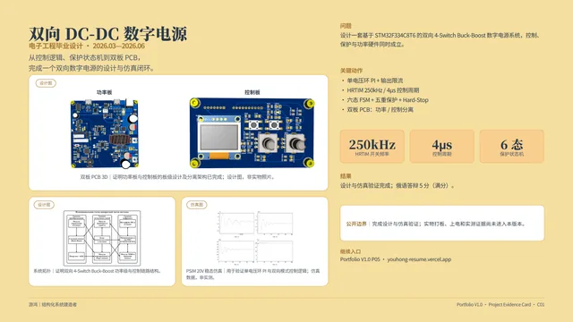
C01 · 电子工程毕业设计
双向 DC-DC 数字电源
从控制逻辑、保护状态机到双板 PCB，完成一个双向数字电源的设计与仿真闭环。
展开证据 →
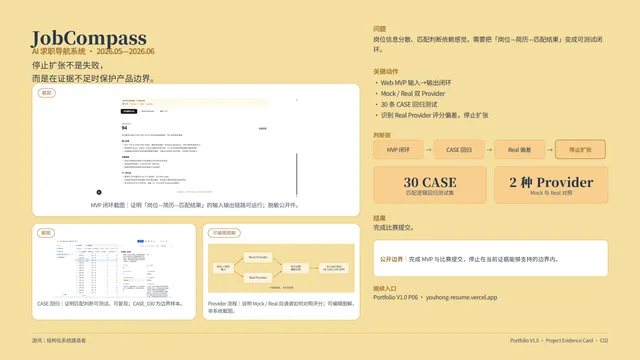
C02 · AI 求职导航系统
JobCompass
停止扩张不是失败，而是在证据不足时保护产品边界。
展开证据 →
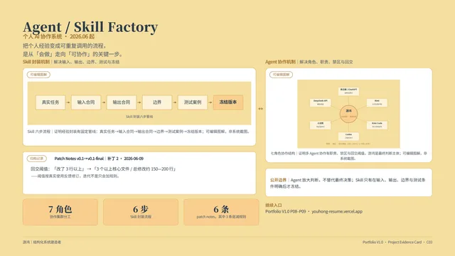
C03 · 个人 AI 协作系统
Agent / Skill Factory
把个人经验变成可重复调用的流程，是从「会做」走向「可协作」的关键一步。
展开证据 →
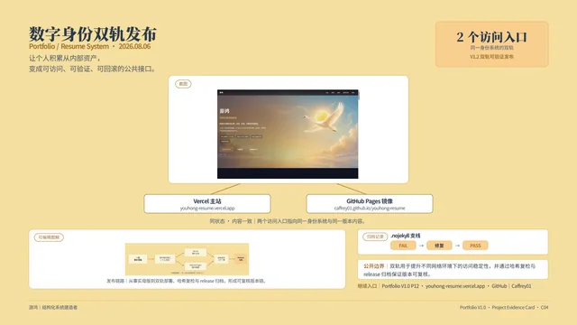
C04 · Portfolio / Resume System
数字身份双轨发布
让个人积累从内部资产，变成可访问、可验证、可回滚的公共接口。
展开证据 →
从控制逻辑、保护状态机到双板 PCB，完成一个双向数字电源的设计与仿真闭环。
核心问题
设计一套基于 STM32F334C8T6 的双向 4-Switch Buck-Boost 数字电源系统，控制、保护与功率硬件同时成立。
关键动作
关键数字
结果
设计与仿真验证完成；俄语答辩 5 分（满分）。
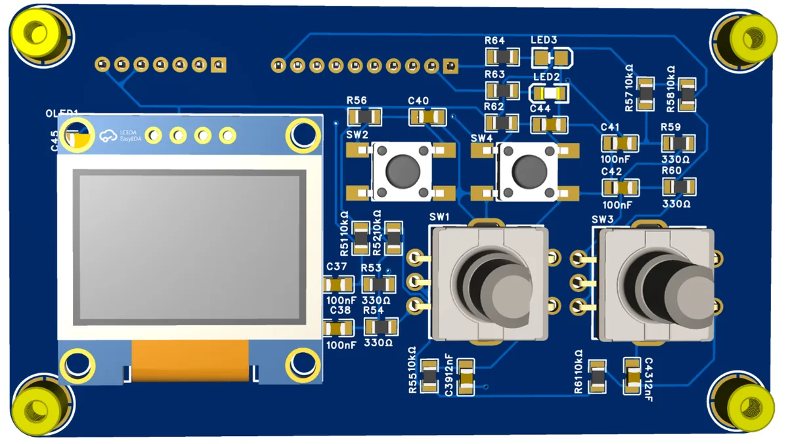
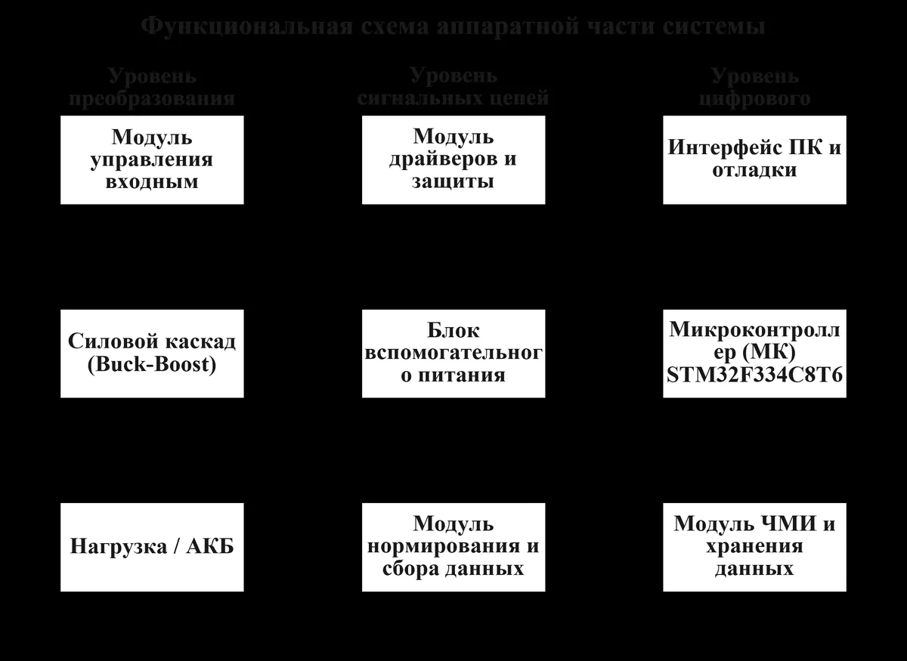
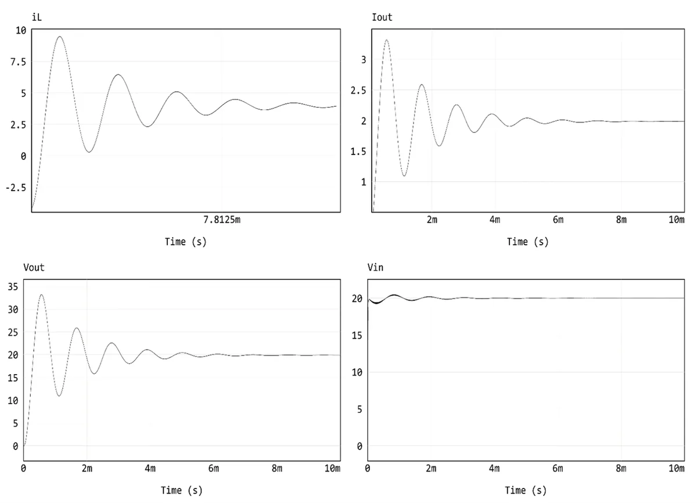
停止扩张不是失败，而是在证据不足时保护产品边界。
核心问题
岗位信息分散、匹配判断依赖感觉，需要把「岗位—简历—匹配结果」变成可测试闭环。
关键动作
关键数字
结果
完成比赛提交。
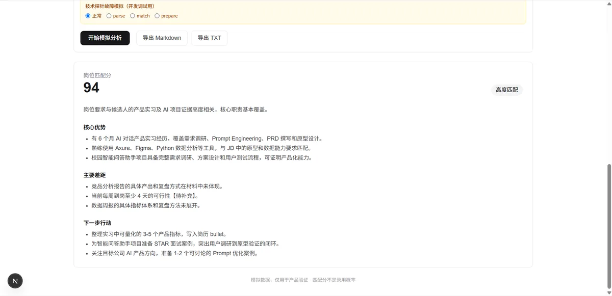
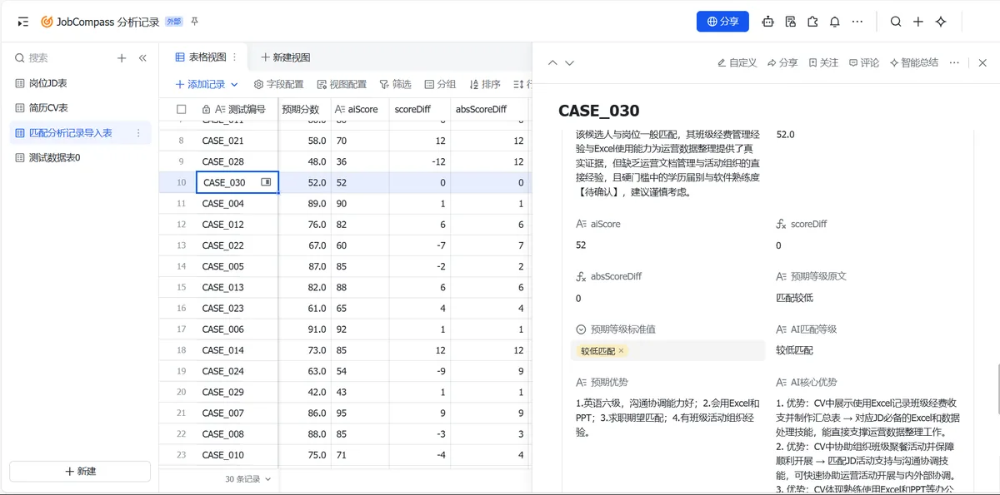
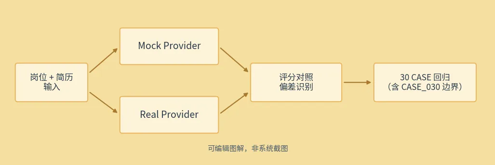
把个人经验变成可重复调用的流程，是从「会做」走向「可协作」的关键一步。
核心问题
AI 工具越来越多，但没有边界、角色和回交机制时，协作会变成重复劳动和失控扩写。
关键动作
双层结构
关键数字
结果
Agent 集群 v0.1-final 冻结；Skill 六步封装机制已形成。
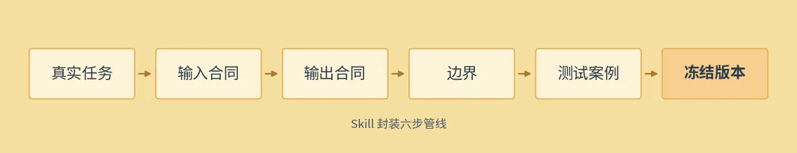
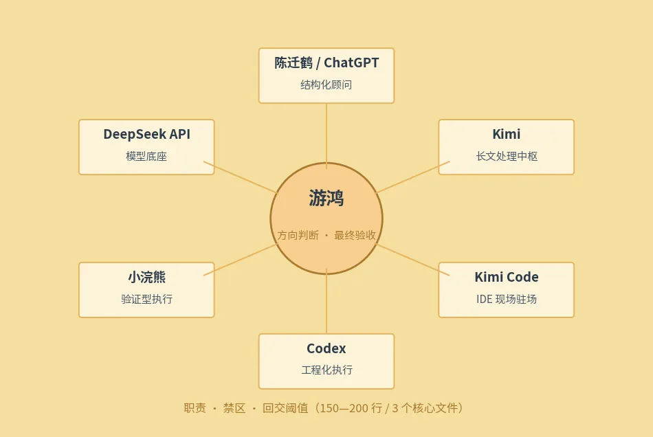
patch note 摘录
阈值按真实使用反馈修订：「3 行以上」放宽为「3 个以上核心文件 / 约 150—200 行」。（Patch Notes v0.1→v0.1-final，补丁 2，2026-06-09）
让个人积累从内部资产，变成可访问、可验证、可回滚的公共接口。
核心问题
拥有大量文档、项目和 Skill，不等于拥有一个外部可理解、可访问的数字身份。
关键动作
关键数字
结果
Portfolio / Resume V1.2 双轨可验证发布。
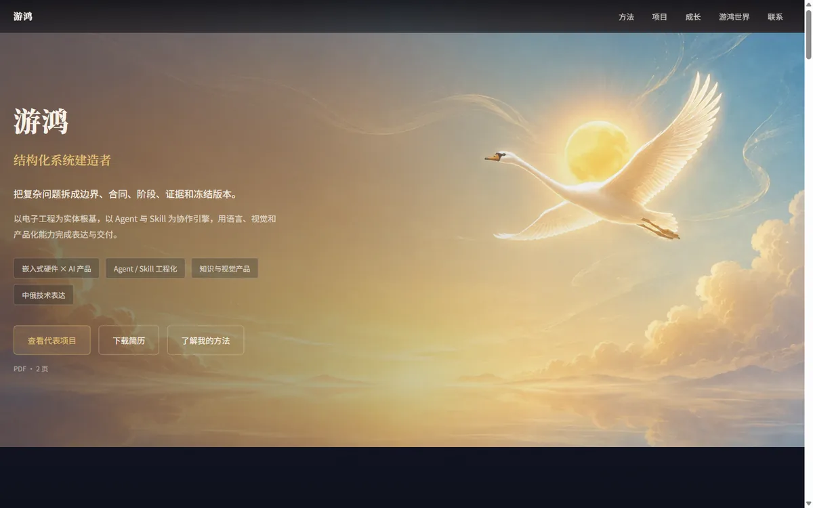
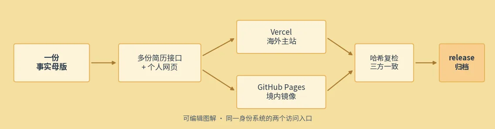
.nojekyll 支线
FAIL 被记录并被修复，而非被覆盖——修复记录已进入 release 归档。
Public PDF
14 页完整作品集：四幕叙事、四张证据卡与公开边界说明。本页全部文案与图片均从该公开版的事实母版裁剪。
Continue
当一个人的经历能够被访问、被验证、被继续调用时，数字身份才不只是介绍，而开始成为连接。